(01) The Pouch
제품을 한 문장으로 소개해 주세요. Drag to turn it, scroll to open it.

M'"> 3D Product Still Cut About(01) The Pouch
제품을 한 문장으로 소개해 주세요. Drag to turn it, scroll to open it.
(02) Open
파우치가 열리는 구간입니다. 여는 방식이나 구조를 설명해 주세요.
(03) Detail
(04) Close
다시 닫히는 구간입니다. 마무리 문장이나 연락처를 적어 주세요.
hello@yourdomain.com